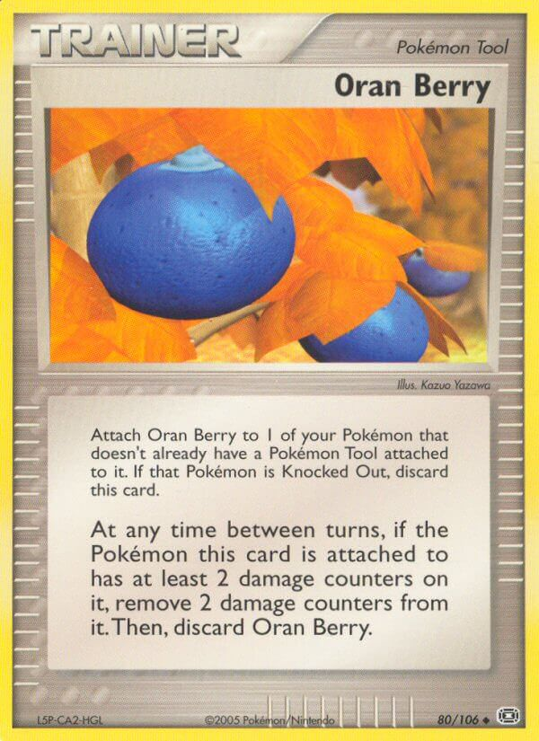
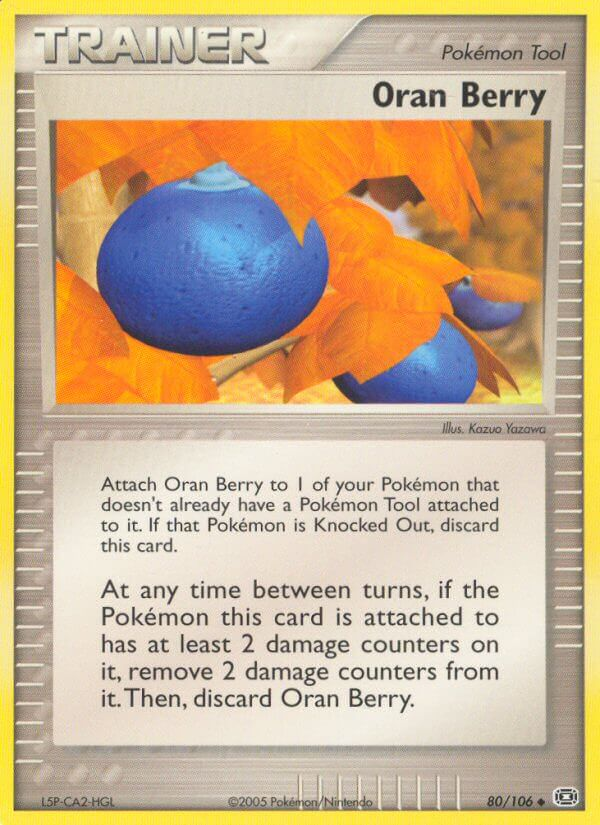

~ Lead your Team to victory! ~ That’s what the back of the Team Magma and Team Aqua booster pack says anyway. Salutations! Sean Adam here, with heavy tonnage on the 2004 format. This is the secret format everyone loves, but no one is particularly loud about! A format with EXPLOUD and no one is SCREAMING how interesting and creative this format can be. Not only does it make a good competitive format with a diverse cardpool for simple play, there are tons of gauntlet decks available. I hear, gauntlets are a big deal in the retro community to keep matches less competitive and more about expression. I don’t really get it, but I love talking about Pokémon for an abnormal amount of time, so here we go!
Table of Contents:
• Links to '04 Decks / Resources
• Dunsparce & the Magnecat Engine
With the upcoming online retro tournament I'm hosting this Saturday, "The War of 04", I wanted to talk about the format in hopes of helping those interested in the event, or the format in general. With four irl Booster Boxes in prizing & more, there's still time to sign up for this exciting event! Event info & registration here.
We'll also be streaming the event here if you'd like to watch!
The 2004 format is commonly referred to in its World Championship’s rendition, with cards from Expedition to Hidden Legends. The big feature was the new two-prize Pokémon, Pokémon-ex, basically meaning “extra power.” The card design of Pokémon-ex typically followed as such:
- Much more HP than Pokémon of the equivalent "Stage"
- Pokémon-ex typically has the power to take 2 Prize Cards before being Knocked Out against 1 Prize Pokémon.
- The first Attack’s Energy cost on a Pokémon-ex was low, but their second attack, (and even in some cases, the next three Attacks), had much higher costs. However, most attacks always have an additional effect, making them stronger than the average non-ex attack.
In 2004, the average damage output of any Stage of Pokémon was 3 Energy for an attack that dealt 50, typically having an additional effect, whether conditional or applied. (Look at Blaziken, Grumpig, and Registeel-ex.)
Even most Basic Pokémon-ex don’t break this rule. Typically, if a Pokémon has a Poké-Body or Poké-Power, it will lack an additional attack, and have an additional retreat cost. Retreat Cost is typically associated with the HP or Attacks and other effects they carry. So, these three Pokémon are very good at determining the value of cards, which is important because the e-card era brought in crazy amounts of cards into the pool!
Before diving further into this article, I suggest taking a look at the below links if you'd like to familiarize yourself with decks from this format. As I believe it would be best to familiarize yourself with the decks, as the plays discussed will directly reference them.
- PTCG Legend's Expedition - Hidden Decks
- PTCG Legend's World's Results
- Jimmy Ballard's CollectionTop Cut Retro Decks
- Jay Hornung's Win-a-Box Tournament Results
- PTCG Archive's '04 decks
It’s good to go over a few details about the format and the article before we dive into cards. Can you remember the strategies and rules for this format? I sure can’t half the time, but that’s okay! Here's some key information so that you don’t have to worry!
- There is a severe lack of Bench protection in this format, so you will need to be wary of damage ticking up across your board.
- The format is slow for a few turns, but then speeds up and solely relies on the player knowing how to sequence plays and strategize several turns in advance.
-This article is covering post-Worlds material from my personal experience with the format and compares it to more modern styles of play and more optimized decklists.
- While some things may be referenced in the article, this write-up will not be covering heavy historical context for the format outside of the cards and the rules of the format.
- Players flip a coin to determine who goes first, and whoever wins the flip must go first. Games are intended to be played in a best of 1 match, and a round timer of 30 minutes. I found it important to include this because it may help some understand why a decklist is built the way it is.
Find all Rules from this format here, in our "rules by era" page.
Intro
These three were introduced as late as the second to last set of the format, which then further set the precedent for even stronger Pokémon-ex. You know what else is crazy? Every Pokémon currently listed in this article is good in the format! We will be discussing the more competitive angle, so prepare for a crash course on deck-building and making cards work for you!
Dunsparce is King of the Format
It’s no exaggeration that this lil’ guy is Striking and simply Running! He’s absolutely getting away with being the best Pokémon in the format! Second being Torchic and third being Copycat. Strike and Run grabs three Basic Pokémon from deck to Bench, with the added bonus of being able to switch out of Dunsparce. The one thing any 2004 player will tell you is “I lost to Sudden Flash flipping heads,” which brings up a glaring flaw in people’s perception of the 2004 format, more on that later. Dunsparce is basically mandatory for your deck. Delcatty? Yes. Magneton? Yes! Bellossom tech? You want those cards OUT of your deck to progress because 2004 is known as a chill format; games are kind of slow, but strategy prevails in the end.

Set-Up is Key
You will need to dig through your deck fast if you want to compete with any deck in the format at a reasonable pace. Decks that don’t run Delcatty and Magneton (the "Magnecat Engine") usually have more value with their specific Pokémon to be less dependent on draw. An example would be an aggressive Stage 1 deck that can take Knock Outs quickly. That being said, if you are running a Stage 2, you most likely need Magnecat.


Magnetic Field, TV Reporter, and Delcatty are only three ways to reliably discard cards from your hand in this format! As stated before, games will be slow and then stabilize into combat puzzles. You will be stuck with cards in hand without Magneton, which acts as a good attacker too. What’s really good about the design in this series is that few Pokémon are boring, meaning most Pokémon have many additional applications during play. Magnecat’s diverse engine structure and Energy cost can fit in just about any deck, so it’s much harder to not justify playing it. If you are not playing Magnecat, you will need to run TV Reporter to remove dead weight from your hands. There are still ways to build decks without these cards, but they will be at a significant disadvantage unless the Pokemon exceeds the value.
The search in this format is limited, but works for the format. See, since Magnecat is such a dominant draw engine in many decks, Friend Ball acts as a free Skitty, Delcatty, or Dunsparce so long as your opponent also plays Dunsparce. It allows Exploud to have 4 search cards that require no real drawback so long as a Dunsparce or Delcatty is present. Almost any deck that runs Delcatty should consider Friend Ball, but does it conquer the other search in the format?
Here's a great example of a deck utilizing the above engine to the fullest.


Oracle is a key card in Magnecat engines, similar to the previous format’s Oracle into Bill to immediately draw the cards searched. Most Oracle stacks will look like either a Rare Candy and their Evolution, or Steven’s Advice into their Evolution. It is almost always best to slowly evolve your Pokémon over time. Rare Candy in this era allowed a Stage 2 Pokémon to be in play as early as turn 1, but most evolved Pokémon lack an attack that costs 1 Energy. In most formats, if you draw-pass, and your opponent misses a key play, you have 1 turn to come back. In 2004, it’s about 2 or more. It’s hard to guarantee a Rare Candy without Oracle, as the best Trainer search we have in the format is Traveling Salesman and Relic Hunter.
Oracle has very strong staying power, as even when games are stalled by Sudden Flash, Oracle forces your opponent to respond in turn. It’s easy to get steamrolled if you can’t pilot your Oracle turns properly.
Professor Elm’s Training Method isn’t a good four-of, meaning unlike Celio’s Network, the card will have low value comparatively to Oracle and Friend Ball. However, its application is still very useful, acting as an additional search card for your Evolution. This is important as most games will likely drop a Town Volunteers.

Town Volunteers is a staple in the format as a one-of, but some decks should consider running more. Sceptile, Blaziken, and Exploud are decks that should consistently get back their energy. Swampert typically utilizes Magneton, so there would be no real point in having more than one in that archetype. Late game, Town Volunteers can almost always follow-up with an Elm into their recycled attacker, Rare Candy, accelerate, and attack; the other instance is using Oracle over Elm, but the point being, Elm’s highest value is towards the end of the game in this format, as you’ve likely used your Oracle cards to set up.

Copycat and Steven’s Advice are practically four-of's in every deck, each. Hand Size is a critical resource in this format, which is one of its more unique traits. In Base-Fossil, your opponent can have 20-card hands and the game can be in a stalemate... But in 2004, you do not have that kind of time. By turn three or four, the first knock-out will occur, and I’m not kidding when I say it turns into a combat puzzle. The reason hand size is important, is these conditional Supporters that are played in every deck.


Note: Steven’s Advice was played using its mistranslation for a long time. It received an errata eventually to match the properly translated Japanese text. The card eventually recieved a reprint with the errata in Power Keepers.
(Errata reprinted in Power Keepers, with highlighted difference.)
Combine many conditional Supporters with a lack of splashable discard effects, these cards become incredibly easy to deny or hinder. The nature of Delcatty and Magneton already add cards to your hand, meaning Copycat becomes more potent. If you’re able to deny a bigger Copycat hand going into your opponent’s turn, you should try your best to keep your hand around 4-7 cards in the early half of the game.
It’s also interesting to note that holding Steven’s Advice isn’t a bad play. Dunsparce uses Strike and Run twice almost every game, so why draw four when you could wait for six? Oracle stacking Steven’s Advice and Delcatty/Friend Ball are great plays, and even TV Reporter can fill that role too.
Towards the late game, it’s important to keep your hand size large. It’s very easy to lose track of Delcatty draws, only to find out your hand size is six after playing it out, your deck count is nine and your opponent’s hand is seventeen cards. While playing Copycat will get more cards, you will deck out the following turn!
Desert Shaman on the surface looks like Judge, but has the same trick as Rocket’s Admin where you can choose to draw less than 4 cards. There aren’t many applications where it’s relevant, but it’s important to note because who knows? Maybe it will stop you from decking out. Desert Shaman is a good card if your opponent doesn’t have a Delcatty setup, typically reserved as a low priority one-of. Decks like Blaziken prefer to include it as their mirror match-up is 50/50, and shuffling away key cards is always good. Oracle is a good countermeasure to Desert Shaman as well, but it should be noted Shaman is not a very useful supporter in the format, except maybe for one deck. If your opponent is out of Oracle, Desert Shaman becomes a much stronger card. No one wants to energy draw blindly!

From Dunsparce to Desert Shaman, you now have seen the core of Supporter cards played in this era, so let’s cover some other Trainers.
Flip the Table
Despite this format being slow, Energy Removal 2 isn’t really that great of a card. It’s very good against decks that lack any sort of acceleration, but the slow pace means the card doesn’t have high value throughout the game. Dual Ball can act as a Dunsparce replacement, reserved for decks that don’t run enough basics to justify Dunsparce.
The thing I love about Lure Ball is the abnormal centering of the card effect (It’s the same even for the Japanese print). Lure Ball has high potential in decks that can’t afford to run Town Volunteers, but run 4-of basics. Decks like Gorebyss and Medicham variants tend to run 4-3 and 3-3s. Rather than digging for the next Evolution, or worse, ripping your Fast Ball and drawing the wrong topper, you have very good odds of getting it out of discard using Lure Ball. The only problem with Lure Ball is you can’t really justify more than 1, so it’s likely just a bad card. I would love to see someone utilize it. Jake Gearheart used it in Jay Hornung's Tournament exactly the way I’ve been describing it.
Quickly now, we follow with Fast Ball. The card is incredibly good, especially when paired with a certain Stadium card. Fast Ball is good in decks that lack Oracle or Elm’s Training Method, but will run into issues if you run more than two evolutionary lines. A good combo-play is using Oracle to grab your Evolution, then Fast Ball it immediately into your hand. Why is that good? Well, if you must Oracle to get Delcatty, you get it 1 turn faster. While Friend Ball usually takes its place, some decks don’t run Colorless Pokémon.


There is a player in my area who attends my monthly cube sessions. He started when Unbroken Bonds released, and continues to question why Master Ball and Master Ball ACE SPEC are different, and why Great Ball now uses Master Ball's original effect. The easiest answer is that Pokémon is not consistent with its cardpool. Master Ball is only good if you are running thick lines of Evolutions, such as 4-3-4s compared to the support lines of 3-2-3 or higher. If you are running many different Pokémon, it has higher value. However, this is usually reserved to decks that can’t run the Magnecat engine.
This format is the only format where Fire doesn’t always lose to Water simply from Weakness, because Resistance is an incredibly strong boon to have in this format. Common resistances are Water, Psychic, and Fighting, and in this generation the max rate is -30 damage upon attack. Combine that with the average 50 damage output, and you are going nowhere. Crystal Shard makes your Pokémon a Colorless type until the end of turn, which is almost mandatory for decks that have these known Resistances.


The Relic Hunter Engine
Relic Hunter is a very good card that has a hard time finding its place in a Magnecat world. Because of oppression, Relic Hunter can’t be played on the first turn unlike the previous format. The key to Relic Hunter being good is the ability to grab Stadium cards and search out supporters that aren’t 4-ofs. Let’s talk about it a little bit, as it’s not a common engine. Relic Hunter works in decks that run few basics, or need ways to bump Stadiums quickly without wasting an Oracle. I’ve always wanted to test out Relic Hunter in Crobat since Flutter Trick is very disruptive combined with Desert Shaman, AND you won’t allow your opponent to Copycat a huge hand after because Relic Hunter is grabbing 2 cards as opposed to Steven's Advice drawing you 6.

Professor Oak’s Research gets the short end of the stick a lot of the time, and it definitely has a use when you don’t want to drop a Steven’s Advice or Copycat, and you don’t want to give your opponent’s Copycat high value. Apricorn Maker doesn’t really justify a 4-of because you can’t play it on the first turn, but take decks like Muk-ex that don’t run a lot of basics. All you need in that deck is 1 Apricorn Maker to grab Fast and Dual Ball, or 2 Dual Ball. Since you’re already shutting off Poké-Powers and Poké-Bodies, you have time to Relic Hunter for the supporters you need.


Softer mentions would be Pokémon Fan Club and Lanette’s Net Search. If there was a Holon’s Castform in the format, Lanette’s would be an insanely powerful card. Dunsparce invalidates the majority of Basic Search naturally from the turn 1 rules, but if you absolutely hate Dunsparce and Dual Ball, these work for the Relic Hunter engine.
Traveling Salesman doesn’t have a lot of good targets, however, the Tools in this format are diverse. Here are some highlights, especially Balloon Berry as a searchable Switch.
 


Switching in and out of Active is very important, and you should try to fit in a Warp Point in all of your decks. While not necessary, the card acts as Gust of Wind in several settings. Decks like Blaziken who repeatedly chain attacks need ways to constantly pivot their attackers out of active. Towards the end of the game, Warp Point is especially deadly.
Warp Point is Gust of Wind
Bench Space is more important than even Hand Size in this format because of cards like Warp Point. If you blaze through all your Rare Candy in the first half of the game, you will stutter in the second half when your lines of play are Town Volunteers to recycle attackers. Towards 3-4 prize games, using Warp Point forces your opponent to choose losing a Basic or a Key Attacker in many cases. For Blaziken, you want to consistently recycle Volcanic Ash on your Blaziken-ex. Warp Point functions as a Switch in this deck because Volcanic Ash doesn’t need to attack the Active Pokémon, and being able to take out Basics is very good. Isn’t it interesting how simply designing the attacks to deal 50 damage on average, combined with most evolving basics having 50 HP, that Warp Point becomes a more dangerous card? Its meanest application? Did your opponent start with Dunsparce and bench a Pokémon? Yoink! Now they better have a switch out to use it, which is always a waste.

So, when is it correct to run Pokémon Reversal? Warp Point can’t grab exactly what you want. Aggressive decks that can deal 50 very quickly (Team Magma, Gorebyss, Medicham) should consider this card to take quick prizes. Remember! This format is played Best of 1, 30 minutes, and the player who has taken the most prizes wins the game! Aggressive decks tend to run out of gas as soon as a Swampert or Blaziken is swinging for 100. Kicking Basics is typically what you aim for in the early game.
Is Juggler good?
Here’s a easy to follow guide to see if you should play Juggler in your deck:
Are you playing Mewtwo-ex? If yes, than yes. If not, than no...
Conclusion: Essentially, no, Juggler is not a worth-while card. Reasoning: Steven’s Advice draws 6 cards. Delcatty is basically Juggler. If you are considering Juggler, consider using its 4 copies to put 2 Skitty and 2 Delcatty in your deck instead.

I always want to call Underground Expedition bait, but it becomes incredibly good when your deck is thin. You can easily search out 2 cards you need after a Town Volunteers after so many Delcatty draws. That being said, I don’t think it’s better than TV Reporter in Blaziken, but great in decks that don’t want to lose cards. Its highest value is if the deck playing runs many 4-ofs.
Mr. Briney’s Compassion and Pokémon Nurse break boundaries when it comes to Supporter Power. In theory, Briney as a 4-of is too good to ignore, but that is only card theory. You cannot pick up Pokémon-ex, but it acts as a Switch and a Pokémon Nurse at the same time. Rare Candy can be used immediately in this format, and picking up a Swampert after using Water Call, then Candy to use it again could be the difference between defeat and victory.
Pokémon Nurse is the opposite of Briney, but is useful because it doesn’t restrict against Pokémon-ex. With several accelerators and overall bulky Pokémon, Sceptile-ex and Blaziken-ex just LOVE to get 150 HP back, and don’t really have issues getting the energy back thanks to their synergy with 1-Prize toppers. The only problem is, these cards are absolutely dead weight in your hand until you’ve completely set up. Reducing them to 2 copies is usually best, and most Stage 2 focused decks will split 1-1.


Set the Stage
I am always envious of other formats that have better Stadium card design, but I’ve discovered that while the Stadiums aren’t particularly interesting or gamebreaking, have niche uses that stop you from having an off turn.
Desert Ruins without a doubt is the best Stadium card in the format. Again, the average damage output in this format is 50 damage, and most viable Pokémon-ex have well over 100 HP. You need to soften them up to turn three-hit knock-outs into quicker two-hit KOs.
Since it’s relevant, I’ll go ahead and talk about Desert Ruin’s worst enemy. Bellossom - which resets the Stadium’s damage each turn, but it isn’t a perfect counter. It isn’t necessary to run Bellossom in every deck. Decks like Gardevoir want it because of Psyshadow’s after-effect. It’s hard to justify space sometimes. The best application to decide on it is if you are running Pokémon-ex, if one of your attackers has Water/Fighting/Psychic Resistance, Bellossom improves the matchup significantly


Low and High Pressure Systems have use in many decks. Low Pressure System isn’t that good, as 10 HP isn’t going to change much, but is a good check to Ancient Technical Machine [Rock]. High Pressure System has some crazy value considering Warp Point and Warp Energy.

Let’s do some applied learning. Say you have no Team Aqua’s Manectric, and you absolutely need to obliterate a Delcatty on your opponent’s bench with Volcanic Ash to even the board. We only need 3 cards for this play, while preserving our Warp Points and Pokémon Nurses.
- Bench a Torchic/Mudkip (Just needs to be a 1 Retreat Cost Fire/Water Pokémon).
- Attach Warp Energy to your Active Blaziken-ex.
- Play High Pressure System.
- Value!
If you’re still kind of stuck, you retreat out of that basic. Make sure you know what your accelerators are sticking the energy to before you decide to retreat.
Ancient Tomb finds its use when your attackers share common metagame weaknesses, Fighting being the most relevant, and Psychic most likely the second. The only issue is Ancient Tomb doesn’t affect Pokémon-ex, which makes its deck slot hard to justify. Exploud can run it to handle Magma matchups, but those spots are reserved for Desert Ruins. Machamp loves this card, as well as the following card below. You can’t tech for everything in this metagame, so it’s best to solidify the matchups you can win.


If you are playing a Psychic Pokémon that isn’t Gardevoir or Banette, you probably want Magnetic Storm. If you are playing a Fighting type that isn’t Team Magma’s Groudon, you probably want Magnetic Storm. Gardevoir-ex doesn’t really need Magnetic Storm, Psystorm is just that powerful. When is it useful? If your Fighting or Psychic deck fails to 2-hit KO a Pokemon because of Resistance, here you go!
Mystery Zone or Island Cave in Swampert? Being able to Fast Ball and get an Energy card from the searched Pokémon is very good. However, I believe that Island Cave serves more purpose overall than Mystery Zone. Mystery Zone’s boon comes from not being reliant on Magneton to get Energy, but you’ll be playing that anyway. Decks like Wailord and Walrein want Island Cave in their decks because it’s sure annoying when Bellossom Miracle Powder’s you and follows up with Solarbeam. Regardless, I don’t find either of these cards carrying games. If you’re playing the tier 5 favorite, Regirock-ex, or the aforementioned tier 6 deck, Registeel-ex, then Island Cave is great!


Mirage Stadium and Team Aqua’s Hideout function as good stalling techniques. If your opponent has a low hand size, Mirage Stadium forces the Switch cards out early or forces your opponent to rely on variance, or worse, wasting an Oracle stack to grab a counter-Stadium card just to avoid the variance. I’m surprised this card isn’t played more today, as I think splitting it up with Team Aqua Hideout is good in decks like Muk-ex. Mirage Stadium doesn’t have high value when hands are large and switch cards are in abundance. Unless you’re playing decks that slow games down, it isn’t going to have high value.
Back to the Stone Ages!
One time I was playing Mike Reynolds in 2006, and he attached Ancient Technical Machine [Rock] to devolve all of my Raichu and Exeggutor, typing in all caps, “BACK TO THE STONE AGES!” The worst part? He wasn’t playing RockLock or anything (He was playing Arcanine-ex (Houndoom) and set me up). I’ll never forget it, because I thought that card was only really good in this format!
Ancient Technical Machine [Rock], is by far, one of the strongest cards in the format and is believed to be a 1-of in every deck that has an Evolved Pokémon as its primary attacking line. Why? So many lines of play with this card! It fundamentally acts as a Gorebyss check, since Double Rainbow are discarded between turns if it isn’t attached to an Evolved Pokémon that isn’t a Pokémon-ex; In Blaziken, you can find yourself winning games without Volcanic Ash by nature of Firestream; Even in early stages of the game, it can act as counter-play to aggressive Rare Candy plays. This is without a doubt one of the greatest cards ever printed.

An Expedition into Unknown Territory
Retro formats seem to be considered like timepieces by a lot of people, and forget that these can be played forever and change forever. Of course, formats will always find a stagnation point where decks have confirmed matchup spreads and optimized decklists. 2004 is no exception, only there are many ways to play each deck with different cards. Let’s highlight some Pokémon cards that showed up post-worlds, in which hopefully help you brainstorm ideas.
Ditto (Skyridge 51)
For many years, I questioned what that Pokémon next to the Doduo was supposed to be (Stantler? Where are the antlers?). For an eon, I pondered why Ditto didn’t show up in ANY worlds lists. If there was ever a deterrent to old format and lists, it was because cards were not readily available, and games stores didn’t really exist in abundance. Ebay was your best bet, right next to flea markets, but many had already exited the Pokémon scene in this era. I think every older player in these eras can always lead to obvious cards not being played as “Information wasn’t readily available.” E-Card was notorious for being a poorly received set by players for simplifying the game and games being much slower with added restrictions, and E-Readers were not a successful gimmick. Did you know that E-Readers give E-Card Pokémon special attacks that you can only use if you have an E-Reader? You can do this if you want, you just need an E-Reader (impossible) and happen to find someone willing to turn 50 years older playing E-Card with you.
Ditto is a crazy good card, replacing Crystal Shard completely. The only real downside is they figured out how to nerf Fossil Ditto, no longer changing types. You can’t hit weakness on anything except Colorless-weak Pokémon, and there are very few viable Pokémon that have Colorless weakness. Ditto is primarily used to act as an additional Pokémon-ex in your mirror matches, or to swing 100 as a 1 Prizer against something like a Swampert-ex. It additionally functions as a Dunsparce when you lack one, or your opponent is forced to switch to prevent you from using Strike and Run. If you are playing any of the 3 starters, Ditto is a must!
Sudowoodo (Aquapolis H24 & 36)
Don’t like Exploud? Neither does Sudowoodo. The problem is Sudowoodo lacks Prismatic Body, but hits weakness on Dunsparce, Exploud, Delcatty, and deletes Team Magma’s Zangoose. Oh, and it deletes Wigglytuff ex if you find someone bold enough to play it.
Wurmple (Dragon 81)
Most people don’t know about Wurmple, but it's a very cool card. Dunsparce can only grab 3 Pokémon, but if you play all Grass Pokémon, Wurmple is a no-brainer! It literally is Dunsparce with 1 sad exception; you can’t switch after using Call for Friends.This can be relevant, but in my years of playing the format I don’t think the switching changes much except stopping a Ditto. After all, why would you want to keep a bench slot closed with Dunsparce? In Blaziken, you’d rather retreat most times just to get a Fire in your discard. Dustox, while not being crazy good, allows Wurmple to have added utility by becoming a pivot with a Rare Candy, and Toxic being a good attack for a Double Rainbow Energy.
Beedrill (Skyridge H4 & 5)
Diving into Wurmple reminds me of Skyridge’s strongest soldier, Beedrill. On play, you Paralyze and Poison the Active Pokémon. I think every good player knows that Paralysis is the strongest Special Condition, and Paralysis-Poison is the best combination of all Special Conditions. Beedrill pulls up having no retreat cost, a 2-Colorless attack to fit in any deck, but the only problem is finding his crew. Some have tested it with Exploud, but I believe it may have more use in Crobat. Venom Spray forces switch cards. So, how do you utilize Beedrill effectively? There are several cards:

Retro Energy acts as a Devolution Spray, and it’s the only way to actually get Beedrill back to hand. Back to hand? The card says discard! That is correct, but when combined with the aforementioned Lure Ball, you can have a real thing going, while gaining an Energy to attack with it later.
Undersea Ruins is definitely weaker than Retro Energy, but it saves you space rather than running Super Scoop Up.
Mr. Briney’s Compassion without a doubt is the best application, but you also lose a Supporter card for the turn. If you try to prioritize Briney over a coin flip, make sure your opponent has a low hand size or you can be ready for a switch out.
Corsola (Hidden Legends 32)
A great card to pivot around with is Corsola. The card is great with High Pressure System and Dunsparce. While you can’t have more than 10 cards with Coral Glow’s effect, it makes an excellent Basic Pokémon with above 50 HP, meaning it can safely pivot into, say, a Blaziken-ex, and not be Knocked Out by its Blaze Kick. I think this card is best when you have High Pressure System.
Victreebel (Aquapolis H30 & 42)
If you are playing Rare Candy and can’t justify Pokémon Reversal, Victreebel could be your replacement to a Bellossom tech. Fragrance Trap is such a good Poké-Power, and is commonly seen play in Machamp. It definitely has potential in Sceptile and Swampert, or maybe in something like Jumpluff/Gorebyss. The real downside is lacking any sort of Resistance to Water.
Roselia (Dragon 9)
Based on all the cards mentioned, can you tell that Sceptile-ex is my most tested deck? Roselia is actually a crazy good Pokémon. Like Corsola, it acts as a Dunsparce switch-in with additional effects. One bonus is you won’t ever be Paralyzed by Sudden Flash. Speed Growth works well with Energy Transfer since you should already be running 13-15 Basic Energy in a Sceptile deck. I firmly believe Sceptile-ex is the best deck in the format but has the unfortunate weakness of Fire! One day, I’ll figure out how to be as fast as Blaziken, and my extensive research into the Water Type will end little Torchic’s reign!
Latias-ex (Dragon 93)
Latias-ex is interesting, as it boasts a dual resistance to Psychic and Fighting, while having a reasonable attack for the format that swings 100. Latias has better metrics against Team Magma’s Groudon, as you only need 3 Energy to take a KO, then 2 the following turn. Rayquaza-ex needs 3 to take a KO, and is forced to lose Multi Energy when using Dragon Burst. Latias only needs a Multi Energy, 2 Fire Energy or 2 Water Energy to take KO on Team Magma’s Groudon and other Pokémon with 100 HP. The real benefit is not losing a third energy, making this a good Swampert card as you’re already using Magneton to grab Basic Energy back.
Minun (Dragon 7)
I stumbled upon this card while playing RS-PK (also known by ADV-PCG, EX Series, Klazcynski’s Stantler-Themed Bedroom, etc.). It was played as an additional Rayquaza ex δ while also reducing spread damage. I find myself using this in Blaziken, as a Firestream sets up Special Circuit to take Knock Outs on Delcatty quickly and is unexpected. Its best utility is stopping Exploud from using Breaking Sound liberally, and is forced to drop a Boost or build up a Hyper Voice. What a good Pokémon.
Raichu (Skyridge H25 & 27)
If there is a Raichu in the format, and other ways to spread damage, they can’t stop me from playing Rai-Eggs. I think this card is weaker than Minun, but spreading 20 across the board can’t be all bad? And you can even pair it with Raichu-ex. Being weak to Fighting isn’t a good thing, so you’ll have to find a partner suitable for him. Ancient Technical Machine [Rock]’s new resurgence makes this card have potential.
Absol (Dragon 1)
Don’t like your opponent having 17 cards in hand? Get rid of it! I think Mill is a legitimate strategy in this format, you just need Pokémon that can survive 50 damage. Consider Team Magma’s Torkoal. If your opponent is using an Oracle, Magma Burn removes the top card. The real answer to why these cards aren’t that crazy is because of Town Volunteers, the sheer amount of Acceleration, and you can Oracle around it. Who knows? Maybe you can find a way to use it.
Weezing (Ruby & Sapphire 24)
Confusion Gas is a very good attack to have, only there are plenty of ways to play around it unfortunately. Take the aforementioned Mirage Stadium into the question now, where an opponent has to flip a coin to attack, or flip a coin to retreat. Team Aqua Hideout is also very good with Weezing, the only real downside is Poison Smog not being a single Energy. Double Rainbow doesn’t work because it doesn’t place damage counters, but Warp Energy has a lot of plays with Weezing. Cards like Medicham appreciate the damage spread, and the Poison effect could be enough to take the Knock Out.
Kyogre-ex (Hidden Legends 94)
Not a commonly played card as most Swampert lists play Suicune-ex. Kyogre-ex functions as a Rayquaza-ex check, as Mark of Antiquity prevents it from attacking. This card’s value comes from the late game, where you can easily use Magneton’s Poké-Power to retrieve lots of Energy in your hand to deal 100 or even more! After that, your deck is likely all Energy, so 2 Energy Draws, plus Magneton gets you the exact amount of cards shuffled if your deck is thin. Sniping 20 anywhere isn’t bad either, softening thing for Swampert-ex.
Slaking (Ruby & Sapphire 12)
Lazy is by far one of the best Poké-Bodies in the game, but this card has a hard time finding its place in the meta. I wanted to dedicate an entire page to Slaking, as I firmly believe it can exist in the meta. Let’s start with its pros:
Its Colorless typing makes Friend Ball more useful than Oracle, meaning you don’t necessarily need Delcatty in its list.

Critical Move isn’t that bad of a cost when you factor in Boost Energy and Warp Energy. Having 2 in play doesn’t allow Warp Point to get around. Unlike Muk-ex, it doesn’t give up 2 Prizes and has MORE HP than Muk-ex. Memory Berry could be viable here because of Vigoroth’s Rage attack and Slakoth’s Slack Off. Due to the unforeseen consequence of Capitalism, Meteor Falls wasn’t printed until Deoxys. Had it been, I could see Slaking really being a threat.
What about its cons? That should be rather obvious, but let’s list them for consistency:
Being weak to Fighting Type Pokémon is not good, and gets absolutely dumpstered by Team Magma. To counter this, consider the Sceptile engine to check Groudon. 4 Energy cost attacks aren’t really good, and the condition to discard a Basic really limits the Pokémon you can pair it with. That being said, Swampert and Blaziken could play this card. Historically, Blaziken has already run Salamence to sneak out KOs, so why not slow your opponent down while you set up?
Conclusion:
The 2004 Worlds Format is a wonderful format that I hope you can participate in soon. Before I go, I wanted to give my overall thoughts on the format as a whole: The skill gap in this format is kind of big. Similar to Base-Fossil, while somewhat inconsistent, falls to the player’s deck list most times; your entire deck matters in 2004, meaning every card you add will be seen and needs to have utility at multiple stages of the game. Games will go in the motions of their sequencing, especially against decks like Blaziken.
The decks that tend to accelerate Energy almost always have identical turns. Determining optimal lines of play can be achieved in just a few games, because there’s quite a lot of time to pick up on plays even during a match. You HAVE time to catch-up after a KO, but it’s a matter of, “Can my deck get access to what it needs as quickly as my opponent in the second half?” This is why Blaziken aiming down Delcatty is usually more important than aiming down their Blaziken first.
The best decks in the format are, without a doubt, Blaziken and Team Magma.


Source: Tsuguyoshi Yamato - 1st Place Worlds


That being said, there are plenty of ways to counter these decks, and almost every deck has several 50/50 matchup spreads. The Magnecat Engine allows many decks to exist in the format. Did you know that Vileplume ex is a crazy Pokémon to have in this format? It’s true! Getting it out early shuts down Rare Candy and forces your opponent to take it slow like you, and your opponent can’t Warp Point or Switch around its potential Confusion infliction. We didn’t even talk about Bellossom from Aquapolis being the only Grass Accelerator with a Poké-Power, and you can pair it with Gloom if you’re afraid of Grass Resistance. The cardpool is simply too large for this format to be excused as “The Magma format.”


Overall, I rate this format as a 7.8/10, because of the LACK of Water type dominance in this format. There is definitely some skill, but the slowness can lead to steamrolling. This is why I find Dunsparce to be critical in the majority of decks, and your decklist needs to be absolutely perfect.
As I said before, this is my first time writing an article for PTCG Legends and I am happy to do so in the future. I have other work too, such as a thread about the history of Control in Pokémon (fair warning, many typos because I was at work on my phone) and the thread that led to this article! If you like Pokémon Cubes, I have done many write-ups in the past about them, such as The Cube Balancing Act, an outline to building cubes. If you’re interested, I have the entire folder here of resources! I’ll probably be frozen by the end of the month if the weather permits it, so maybe when I finally thaw out you’ll see future work from me! Thanks for reading, and goodbye forever until it isn’t!